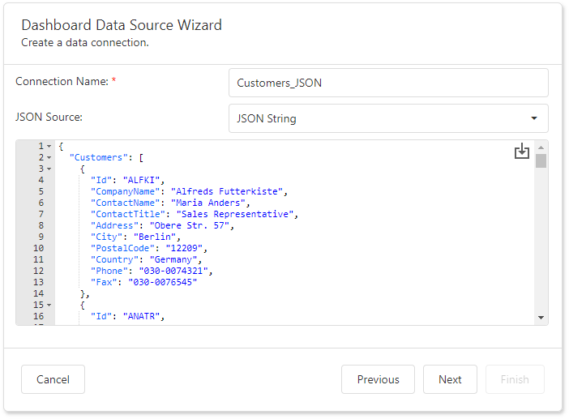

Specify Data Source Settings (JSON)
Select an Existing Data Connection
The following page appears if you select JSON on the start page. Select an existing connection from the list.
Click Next to proceed to the Select Data Fields page.
Create a New Data Connection
Select a new data connection on the following page and click Next.

Configure a New Data Connection
On the next page, configure a new data connection:

Specify the connection name and select the JSON source type.
Web Service Endpoint (URI)
A URL to a file in JSON format. You can also specify the Web Service Endpoint's request parameters (username and password, HTTP headers, or query parameters).

- A path parameter appends a path element to a JSON endpoint's Uri.
- A query parameter specifies an HTTP request parameter that is passed to a JSON endpoint.
- A header is a custom HTTP header in JSON endpoint requests.
You can use expressions to specify path parameters, query parameter values, and headers.
Click the F icon to switch the Value option to Expression Editor and click the ellipsis button (...) to invoke the editor.
Double-click the expression in the invoked Expression Editor and click OK.
An expression can include dashboard parameters.
Tip
Refer to the following help topic for details on how to create a dashboard parameter: Creating Parameters.
Select the Fields section in the Expression Editor, double-click the predefined dashboard parameter, and click OK.

Path parameters and query parameters are included in endpoint requests in the order in which they are listed. Move a parameter up or down the list to change its position within an endpoint request.
The read-only Resulting URI field displays the result: a JSON URI.
Configure basic HTTP authentication credentials and click Next to proceed to the Select Data Fields page.
JSON String
A string that contains JSON data. You can also use the Upload JSON button to load content from the selected JSON file.

Click Next to proceed to the "Select Data Fields" page.
Select Data Fields
The "Select data fields" page allows you to include / exclude data fields used in a JSON data source.

Click Finish to create a JSON data source.